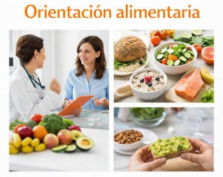

¿Qué encontrarás en NutriVida?
En esta página se presentan servicios relacionados con la educación alimentaria y los hábitos saludables.
1. Orientación alimentaria
La orientación saludable es el proceso de guiar y dar herramientas a una persona para que adopte hábitos sanos según su propio estilo de vida. Se resume en:
- Asesoría personalizada: Crear metas reales adaptadas a los gustos, tiempos y presupuesto de cada persona.
- Enfoque integral: Conectar cuerpo y mente (comida, ejercicio, sueño y emociones).
- Autonomía: Enseñar a tomar decisiones correctas por cuenta propia a largo plazo.
- Prevención: Enfocarse en evitar enfermedades y mejorar la energía diaria.

2. Hábitos saludables
Los hábitos saludables son rutinas diarias que cuidan tu salud y previenen enfermedades. Se resumen en:
- Alimentación: Come sano, toma agua y evita ultraprocesados.
- Ejercicio: Mantente activo y entrena fuerza./li>
- Descanso: Duerme de 7 a 8 horas diarias.
- Higiene: Mantén tu aseo personal diario.
- Salud mental: Reduce el estrés y conecta con otros.
- Evitar tóxicos: Di no al tabaco, alcohol y automedicación.
3. Educación nutricional
La educación nutricional enseña a tomar decisiones alimentarias conscientes e informadas para mejorar la salud de forma permanente. Se resume en:
- Aprender a elegir: Saber leer etiquetas, identificar ingredientes de calidad y medir porciones.
- Planificar el plato:Diseñar comidas equilibradas (como el plato saludable) y cocinar con poca grasa.
- Comer con conciencia: Escuchar el hambre y la saciedad real, evitando comer por estrés o ansiedad.
- Prevenir enfermedades: Entender el impacto de la comida en la energía diaria y en la salud del corazón.
4. Información para toda la familia
La nutrición familiar adapta la alimentación a las necesidades de todos en casa, promoviendo hábitos saludables juntos. Se resume en:
- Plato equilibrado: Llenar la mitad del plato con vegetales, un cuarto con proteína y un cuarto con carbohidratos.
- Agua como prioridad: Eliminar refrescos y jugos envasados; usar el agua como bebida principal.
- Mesa sin pantallas: Comer juntos sin televisión ni celulares para mejorar la convivencia y el control del apetito.
- Nutrición por edad: Dar calcio y hierro a niños en crecimiento, cuidar porciones en adultos y asegurar fibra en adultos mayores.
- Hábitos en equipo: Involucrar a todos en las compras, la cocina y mantener snacks saludables (fruta picada) listos en casa.